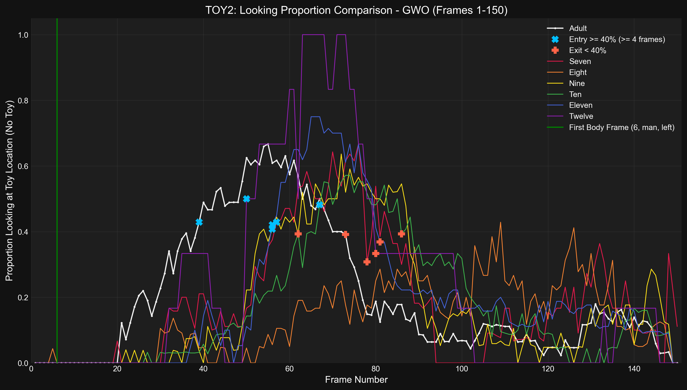
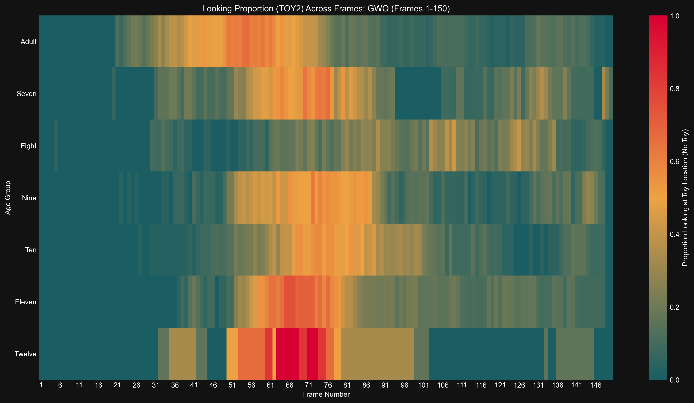

Generated: 2025-04-24 20:11:43
Time series of proportion looking at Toy Location (No Toy) for Adult
Results (Adult):- Entry (≥40%, ≤F75): Frame 39- Exit (<40%): Frame 73- Duration (≥40%): 34 frames- Latency (from body frame): 33 frames
Time series of proportion looking at Toy Location (No Toy) for Seven
Results (Seven):- Entry (≥40%, ≤F75): Frame 57- Exit (<40%): Frame 84- Duration (≥40%): 27 frames- Latency (from body frame): 51 frames
Time series of proportion looking at Toy Location (No Toy) for Eight
Results (Eight):- Entry (≥40%): No sustained entry found.
Time series of proportion looking at Toy Location (No Toy) for Nine
Results (Nine):- Entry (≥40%, ≤F75): Frame 56- Exit (<40%): Frame 88- Duration (≥40%): 32 frames- Latency (from body frame): 50 frames
Time series of proportion looking at Toy Location (No Toy) for Ten
Results (Ten):- Entry (≥40%, ≤F75): Frame 67- Exit (<40%): Frame 89- Duration (≥40%): 22 frames- Latency (from body frame): 61 frames
Time series of proportion looking at Toy Location (No Toy) for Eleven
Results (Eleven):- Entry (≥40%, ≤F75): Frame 56- Exit (<40%): Frame 81- Duration (≥40%): 25 frames- Latency (from body frame): 50 frames
Time series of proportion looking at Toy Location (No Toy) for Twelve
Results (Twelve):- Entry (≥40%, ≤F75): Frame 50- Exit (<40%): Frame 80- Duration (≥40%): 30 frames- Latency (from body frame): 44 frames
Detailed time series comparing proportion looking at Toy Location (No Toy) across age groups.
Bar plot showing latency from body frame to >=40% entry (entry <= F75) looking at Toy Location (No Toy) for gwo
Results (Latency in Frames, 0 if no valid entry ≤F75): seven: 51, eight: 0, nine: 50, ten: 61, eleven: 50, twelve: 44, adult: 33
Bar plot showing duration >= 40% (entry <= F75) looking at Toy Location (No Toy) for gwo
Results (Duration in Frames, 0 if no valid entry ≤F75): seven: 27, eight: 0, nine: 32, ten: 22, eleven: 25, twelve: 30, adult: 34
Bar chart comparing mean proportion looking at Toy Location (No Toy) across age groups.
Results (Mean Proportion): Seven: 0.185, Eight: 0.133, Nine: 0.173, Ten: 0.167, Eleven: 0.196, Twelve: 0.234, Adult: 0.206
Heatmap showing proportion looking at Toy Location (No Toy) across frames and age groups.
